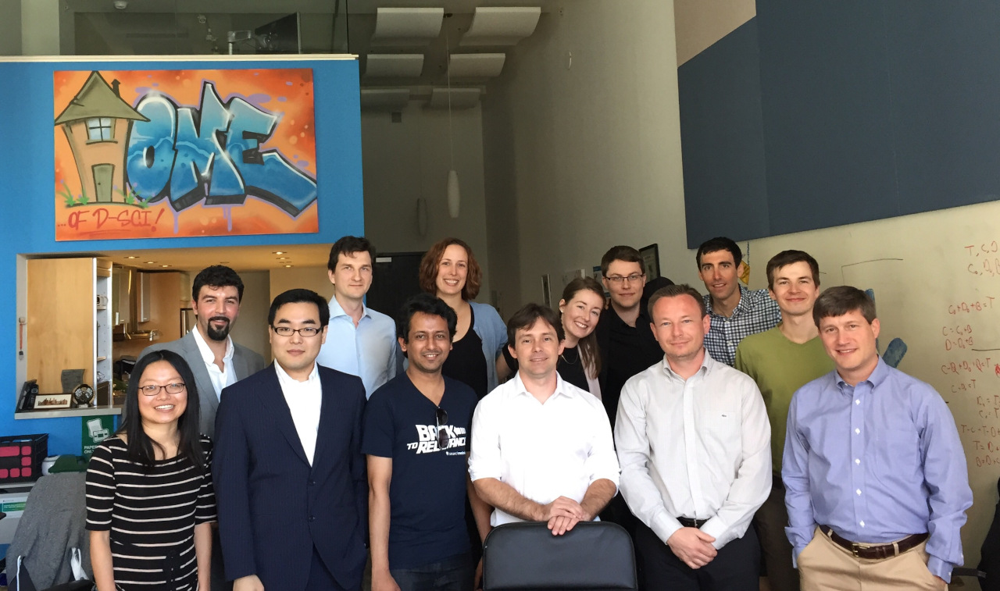
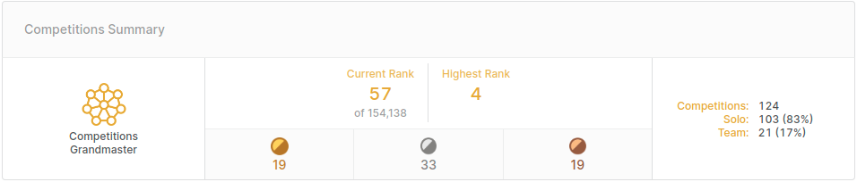

Kaggle で10年遊んだ GrandMaster の振り返り
2011年2月16日に Kaggle アカウントを取得して10年が経過した。長い間 Kaggle Ranking 世界 1 位を目指してきたが、この目標やモチベーションが大きく変化してきたと感じたため、一区切りつけるためにもこの10年+αを振り返る。今の目標は対象を問わずアルゴリズムで資産を最大化すること。データとエンジニアリングを駆使してアルファを探し、システム化して運用する。実利的で定量評価できる最高に楽しいタスクです。
競技プログラミングからKaggleを始めるまで
Kaggle ができる前は ICPC や ICFP Programming Contest といった競技プログラミング系のコンテストに参加していた。ICPC ではアジア地区会津大会 2007、アジア地区東京大会 2008 に出場したが大敗して悔しくて仕方がなかった。コードゴルフも嗜む程度に遊んでいて PKU JudgeOnline や Anarchy Golf で遊んでいた。これは「俺の環境ならこれが最短なのに！」というコンパイラ依存の結果に納得ができず興味が薄れていった。コンパイラの謎知識が増えるのでこれはこれで楽しかった。Kaggle に近い話だと、学部の卒業論文では Breaking visual CAPTCHAs を研究テーマとして C++ で CNN を実装していた。今では考えられないが、勾配から更新式を用意してコードに落とし込み CPU (Pentium 4) で学習していた。全然学習してくれなくてデバッグに非常に苦しんだ。Theano がリリースされたのがこの頃だが、これが使えることに気づいたのは残念ながら数年後だった。
奈良先端大 (NAIST) へ大学院進学した後も相変わらずアルゴリズム系のコンテストに参加していた。陸の孤島たる NAIST は研究に打ち込む素晴らしい環境なのだが、コンテストをはじめとして色々なことに時間を使っていたので研究に集中していたかと言われると微妙かもしれない。もちろん研究は楽しかったし、節度を持ってコンテストに参加していたつもりである。
この頃一番思い出に残ってるコンテストは Google AI Challenge という、Waterloo 大学の Computer Science Club が主催して Google がスポンサーをしていたコンテスト。第2回のコンテストは Tron という二人零和有限確定完全情報ゲームの AI を開発して Elo rating system で競うもの。ヘビの体を 2D マップ上で伸ばしていく Snake game とほぼ同じゲームで、今でもここから AI と対戦して遊ぶことができる。Snake game と違うのは、餌を食べなくてもヘビの身長が伸びる点。Alpha-beta pruning とボロノイ領域を使った評価ヒューリスティクスで Finalist 入りを果たしたが、優勝者の評価ヒューリスティクスには遠く及ばなかった。同じアルゴリズムでも徹底的に結果を分析することでこうも差ができるのかと関心した。でも負けるのはやっぱり悔しい。
このコンテストは長い間 Kaggle Ranking でトップを保っていた Gilberto Titericz が参加した最初のコンテストであったらしく親近感を覚える。過去にこうした AI コンテストで遊んでいた Kaggler は他にもいて、第3回の Google AI Challenge の優勝者 Gábor Melis は Kaggle の Higgs Boson Machine Learning Challenge の優勝者でもある。彼のコードはどちらも Common Lisp (!?) で書かれていて GitHub 公開されている。Kaggle ができたのはこの Google AI Challenge が開催されていた頃で、データマイニング系のメーリングリストで初めて見た気がする。サイトができた当初はタスクとデータに興味が持てず、アカウントを作りっぱなしで放置していた。なので厳密には 10 年間ずっと Kaggle をしていたわけではない。当時は Workshop で出題される shared task のほうがドメインに特化した知識を得ることができ、やり甲斐が大きいと感じていた。ただこれもさほどハマることはなく、KDD Cup やレコメンドといったデータマイニング系のコンテストが Kaggle で開催される運びとなり、ようやく重い腰を上げて Kaggle に参加してドハマりした。当時はデータを一般に広く公開するような試みは多くなく、データに飢えていた。Kaggle は様々な企業から多様なデータが集まるため、これが非常に魅力的だった。
Kaggler との思い出
はじめは常にソロ参加で ":-)" というふざけたハンドルネームで Kaggle のコンテストに参加していた。 Kaggle Master となりランキング上位になったあたりでチームマージのリクエストを沢山もらうようになった。当時の point system ではチームメンバー数が 2 人であれば獲得する kaggle point は 1/2 となるため、チームを組まない人は多かったように思う。 ただしコンテストが終わった後、今ほど Kaggle 上での Solution やコードの公開に皆が積極的ではなかったので、勝つために何が不足していたのかわからないことが多かった。
次第にチームで参加したほうが学びが多いことに気づき、積極的にチームを組むようになった。2015年ごろからニューヨークの同僚と Kaggle でチームを組むことが増え、最も古く権威あるコンテストと言われている（諸説ある） KDD Cup に優勝したり、複数の Kaggle コンペで入賞・優勝した。当時所属していた AIG の CEO であった Peter Hancock からメールでお褒めの言葉をいただき、何度もメールを見返した。 これには上司もニッコリ上機嫌であったが、そのすぐ後に退職したい旨を上司に伝えたのは申し訳なかった。紆余曲折あり、KDD'15 への参加費を自己負担して有給をとり発表しに行った。コンテストの賞金より旅費と参加費のほうが高額であったが、チームメイトと初めて会ったその日のうちに次のコンテストの特徴量の話題で盛り上がり大変楽しい思い出となった。
チームを組んで面白かった経験は探せばいくらでも見つかる。Nir Kalkstein (Medrr) と組んだときは独自開発の boosting algorithm である deep-bit を教えてもらった。画像コンペに適用してかなり良いスコアを達成しており大変な衝撃を受けた。C でフルスクラッチで書かれているため、いつか使いやすい形に再実装してアルゴリズムも改良して送り返したいと考えている。彼曰く、いつも XGBoost より良い結果を出す boosting algorithm であるとのことだが、まだ検証しきれていない。最強のオレオレ boosting algorithm 開発は夢があって大変良い。余談だが信号処理の専門性を持つ彼の起業実績はとても面白い。My Algorithms Can Make Cash Or Detect Cancer は最高にかっこいい言葉なので、いつか自分も真似したい。
Kaggle Master 限定コンテストの表彰イベント (Genentech Cervical Cancer Screening) ではコンテストで競い合った面々と初めて合う機会に恵まれた。みな初対面であるはずなのに、まるで初対面である感じがしなかった。一緒に Kaggle オフィスへ訪問したことは最高の思い出となった。
|  |
Google Landmark Recognition Challenge では 2018, 2019, 2020 とすべて参加して Poster スライドを提出してきた。2020 はコロナの影響もありオフラインで議論することはできなかったが、2018 と 2019 では CVPR の会場でコンテスト参加者との交流をする機会に恵まれた。このコンテストで RANSAC アルゴリズムを使用した際、OpenCV の RANSAC 実装は精度が低くないか？という疑問を持っていて、会場でコンテストに参加した一人と認識を共有できたのが良かった。と思ったらその人たちが RANSAC の iteration 数のハイパーパラメータが固定になっている点を修正する PR を出して、Performance vs Cost など検証していて驚いた。素晴らしい。 2019年のコンペでは lyakaap さんと一緒に参加して優勝した。有給を限界まで取得して全力で戦ったのはこれが最初で最後だと思う。星のや軽井沢で合宿をしたり不定期の通話で作戦会議などしていた。チームとしてここまでエフォートを割いてくれたことに感謝しかない。
国内で Kaggler 同士と交流し始めたのは 2016 年 2 月のコンペ振り返りのイベントが転機であったと思う。それまでは Kaggle にいる謎の人同士であった。Kaggle コンペについて議論し足りない状態で悶々としていた帰り道、ほとんど初対面の Kaggler とビル玄関で挨拶し合ったり議論をはじめた。長くなりそうだったので同じビルの居酒屋に移動して、結局 5 時間ほど話し続けていた。この会を勝手に Kaggle Tokyo Meetup 第0回と呼んでいて、その後も話す機会を持つことができればということで threecourse さんと Kaggler-ja Slack を作成した覚えがある。 不定期でコンテスト上位の人を招待して発表・議論できる場として開催してきたが、色々な仕事をしてくれていた tkm さんの留学やコロナの影響もあってしばらく開催できていない。双方向の議論ができる場としたい一方で、回を重ねるごとに応募者が増え続けてキャパの大きな会場を用意するのが難しくなっているなど課題を抱えていた。なので今後どうなるかわからないけど、オンラインでもいいのでやりたいですね。
これまでの戦績と獲得賞金
チームでの獲得賞金は $127,500 (約 1349万円)、個人の獲得賞金は $56,728 (約 600 万円)。Kaggle の Gold メダルは 19 個 (うちソロでの獲得が 8 個) であった。
賞金は人件費のことを考えるとまったくペイしないが、それでも様々な経験をさせてくれたことに感謝したい。 賞金が低いと思ったら受賞時に一言伝えることをおすすめする。過去に賞金が低いと伝えたら、次のコンテストでは賞金が倍になり、その賞金を勝ち取ることができた (SpaceNet2, SpaceNet5)。受注開発と同じで対価が低ければそれを伝えることが大切。
長いこと目標としていた Kaggle Ranking 世界1位は 4 位を最高順位として未達となった。これまでのランキングの推移は以下の通り。データ点は Wayback Machine から取得した。2014年までは順位が低いためデータを取ることができず、2019年後半はサイトの仕様変更によってデータが取得できていない。2017年はKaggleを引退するつもりで大阪に引っ越したことが数字に出ている。 そのまま続けていればと少しだけ後悔してる。
コンテストの運営として気をつけること
2018 年から経産省主催の AI エッジコンテストにて、準備・運営委員や審査委員としてお手伝いをしてきた。 最初の準備委員の会合から先週行われた第 4 回の実装コンテスト表彰式までを考えると、2 年以上関わってきたことになる。 中でも私はアルゴリズムコンテストを中心にコメントしてきたが、半導体については詳しくないため実装コンテストの諸先生方のコメントはとても勉強になった。

コンテスト参加者の意見を代弁するつもりで色々なコメントをしてきたが、基本的には以下のことを気にかけていた。
- 参加者同士や運営と開かれた場所で議論できることの必要性
- 不正やリークが発生しないか
- 外部データを利用する際の公平性の担保
- コンテスト終了後に事後評価や議論ができるような権利設定
- 魅力的なコンテストにするためにどうするべきか
このうち議論できる場の必要性はコンテストの大前提であるべきだと思う。ルールを設けることで完璧なコンテストが開けるわけがなく、問い合わせによって参加者の有利不利ができるのは大変よろしくない。ということを主催者に強調して伝えた。
コンテスト参加者には様々なモチベーションがあり、賞金に興味がある人もいれば、データやタスク、コンテスト主催企業・団体への興味で参加する人もいる。昨今では非常に多様なコンテストが開催されているため、コンテストに興味を持ってもらうのも一苦労だと思う。 どうすれば魅力的なコンテストを開催できるかについては、コンテストのタスクに詳しく情熱のある人にアピールしてもらうのが一番良い。コンテストのデータやタスクに興味を持ってもらうための良いアピール例として、ぜひ The DownLinQ の背景からタスク解説、ベースライン解説から事後分析まで力を入れている姿を見て参考にしてほしい。国内だと J-Quants の株式分析チュートリアルも良い出来で感心した。
表彰イベントも参加者にとっては好印象となる。人によって好みは分かれるが、学会併設の workshop での発表の場があればなお良いし、論文を書いたり発表する機会を作ってもらえると大変に良い。実績としてアピールしやすい。長い時間をかけて競い合った競争相手はライバルのソリューションに興味津々なので、こうした場があると非常に嬉しい。 逆に主催者の権利保護のためにこうした場を奪い知識を独占しようとする動きは不興を買う。参加者目線からするとコンテストが安価なクラウドソーシングとなるので大変よろしくない。
賞金を上げるためには、それだけの価値があるタスクを用意できなければ予算も立たない。そのためか大きな賞金が出るコンテストの主催は大きな予算が出やすいと思われる大手IT企業、金融、ヘルスケア、防衛産業が多いように思う。企業のデータ分析においては利益や価値を作るための課題設計は本質的なことであると思うので、主催はどうか本領発揮して課題設計して参加者に見せつけてほしい。 求人や教育目的といった主催することが目的のひとつである場合、タスクが後に来るため悩ましい話かと思う。それでも意味のある分析対象であれば参加者のモチベーションも上がる。
とある会社のコンテスト主催の相談を受けた際には $100,000 の Prize pool を確保してくれと伝えたが今も気持ちは変わっていない。この金額は Kaggle でも高めの金額ではあるがよくある金額。コンテスト後も参加者や入賞者と良好な関係を続けるための費用だと思って本当に頑張ってほしい。一方でコンテストの開催に際して発生するコンサルフィーに対して、賞金額が明らかに低いと感じるコンテストを見るとモチベーションは下がる。NGO や省庁が主催の場合は予算獲得が難しいとは思うが、アメリカのホワイトハウスが Passenger Screening Algorithm Challenge のために通した $1,500,000 賞金のコンテストを例に挙げるなどしてがんばって予算獲得してほしい。 税金を使う都合上、賞金を受け取る資格が米国民に限定され批判を受けたコンテストではあるが、予算獲得した点はすごい。どんどん後に続いてほしい。
これからのこと
趣味で研究していたのに横からその趣味の価値や収益性についてケチをつけるのは大変行儀が悪いことだと思うし、そういったケチはできればよしてほしい。上に書いた話のほとんどは趣味の話です。みんな自由にすればいいと思う。それはそれとして、世の中には簡単に参加できて収益性を競うことができる場があるとに気づき、だんだんとそちらに時間を使うようになった。2018 年ごろに恐るべき治安の悪さを目にして以降、バリバリ警戒するようになりネットで言及することは控えるようになりましたが、ネタは溜まっているのでいつか楽しく話す日が来れば良いと思ってます。今後も対戦よろしくおねがいします。